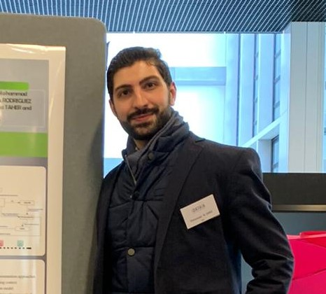

About Us

Sandra GARCIA-RODRIGUEZ
R & D Engineer/ Data Scientist
Machine Learning, Data Streams,
Multi-objective Optimization, Multi-Agents Systems

Mohammad ALSHAER
R & D Engineer/ Data Scientist
Big Data, Machine Learning, Realtime Analysis,
Time series Analysis
STREAMER
Code
LinkQuick Start
LinkSTREAMER Guide
LinkContact
Sandra GARCIA-RODRIGUEZ
sandra.garciarodriguez@cea.fr
Mohammad ALSHAER
mohammad.alshaer@cea.fr